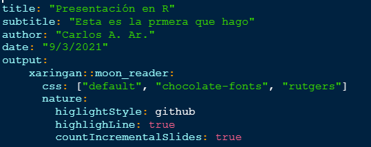
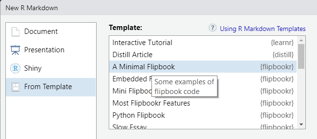

Xaringan y Flipbookr
Carlos A. Ar.
Última edición 25 de marzo del 2021
Objetivo: crear una presentación en RStudio con código a través del paquete xaringan, definir y crear un flipbook.
¿Qué es Xaringan?
El nombre viene de un animé pero aquí nos referimos al paquete de R que permite realizar presentaciones con sintáxis de RMarkdown. Las ventajas son heredadas por RMarkdown, es decir, que existe la posibilidad de ver código, hacer divérsos análisis automatizados y no hacer siempre copy-paste de los gráficos que se elaboran en RStudio.
Crear una presentación en Xaringan
Instalar la libraría xaringan
install.package("xaringan")y cargar la libreríalibrary(xaringan).Crear un proyecto de R para que las imágenes y demás archivos se queden en la carpeta que se crea en automático en la creación del proyecto.
Dentro del proyecto crear un archivo de RMarkdown y cambiar el encabezado YAML:

La diferencia con este encabezado y el de un Rmd es el output, mientras que en Rmd el output es html_document o pdf_document, para compartir una presentación de xaringan es necesario usar xaringan::moon_reader lo que implica una forma particular de presentación.
Notemos que existen algunas especificaciones extra como el estilo de la presentación que se pones en el parámetro css. ára poder identificar los diferentes estilos posibles en las presentaciones de sharingan usamos el siguiente comando:
names(xaringan:::list_css())## [1] "chocolate-fonts" "chocolate" "default-fonts" "default"
## [5] "duke-blue" "fc-fonts" "fc" "hygge-duke"
## [9] "hygge" "ki-fonts" "ki" "kunoichi"
## [13] "lucy-fonts" "lucy" "metropolis-fonts" "metropolis"
## [17] "middlebury-fonts" "middlebury" "nhsr-fonts" "nhsr"
## [21] "ninjutsu" "rladies-fonts" "rladies" "robot-fonts"
## [25] "robot" "rutgers-fonts" "rutgers" "shinobi"
## [29] "tamu-fonts" "tamu" "uio-fonts" "uio"
## [33] "uo-fonts" "uo" "uol-fonts" "uol"
## [37] "useR-fonts" "useR"En general el parámetro css describe las características de personalización de la presentació.
Por otro lado
`nature:`
`higlightStyle: github`
`highlighLine: true`
`countIncrementalSlides: true`hace referencia a la forma en que queremos que aparezcan las líneas de código dentro de la presentación. Por ejemplo, highlighLine: true implica que se hará un subrayado para los códigos que aparezcan en la presentación. Mientras que countIncrementalSlides: true permitirá que las diapositivas se enumeren.
Cargar las librerías a ocupar en un chunk de R.
Escribir tres guiones medios — cada que se requiera una nueva diapositiva. Al inicio de cada diapositiva debe existir un título el cual se pone como la sintáxis de Rmd.
NOTA: si deseas ver las modifiaciones que haces de tu presentación en el momento de que haces los cambios en el código utiliza en consola el comando: xaringan::inf_mr()
Personalizar la presentación
En cada diapositica es posible hacer que esta tenga imágenes, lo cual se logra con sintáxis de Rmd o de HTML. Aquí pongo el ejemplo de HTML.
<div> <p style = 'text-align:center;'> {width='250px'} </p> </div>
En este caso la imagen se llama xaringan_yaml y tiene extensión png. Esta imagen debe ser previamente guardada en la carpeta del RProject donde se está trabajando, de esta manera no será necesario escribir el path del directorio.
Si se desea dividir una diapositiva en dos columnas se usa la sintáxis siguiente:
.pull-left[ Hola, este es el lado izquierdo ] .pull-right[ Hola, este es el lado derechairo ]
Donde el contenido de la izquierda irá entre los corchetes así como el de la derecha.
- Para hacer referencias a páginas o insertar código con sus múltiples opciones de aparición en la presentación, basta con usar la sintáxis de Rmd.
Para más información sobre la personalización de Xaringan consulta Xaringan Presentations
Flipbookr
¿Qué es un Flipbook?
Los flipbooks presentan el código paso a paso y en paralelo con la salida. Es una forma de ver resultados de manera incremental.
Ejemplo

En general un flipbook permite tener la visualización de manera secuencial o progresiva lo cual permite tener un mejor entendimiento de lo que sucede paso a paso.
En particular, se puede hacer una presentación con Xaringan que contengan a su vez los flipbooks. Evangeline Reynols describe que La idea de los flipbooks es ofrecer a los “lectores” conocimientos sobre el comportamiento de funciones específicas en el contexto de un proyecto más amplio. El “lector” puede aislar funciones desconocidas y alternar entre estados de salida antes y después de que se use una función, viendo cómo esa función afecta el resultado.
Ventajas del uso de flipbooks
- Permite digerir el proceso de manipulación de datos y construcción de gráficos. ¡Como en forma de película!
- Se puede obtener información de tramos cortos para generar análisis similares pero con otra información.
- Observar cambios del código a través del movimiento en vez de la lectura exaustiva de código.
Utilidad de flipbooks.
Algunas formas en las que se practica la creación de flipbooks son:
- Negociación de datos.
- Visualización de datos con ggplot2.
- Análisis Estadístico.
Xaringan y Flipbookr
Para poder crear un Flipbook en R que se reproduzca en Xaringan:
- Instalar la plataforma de presentación de diapositivas Xaringan install.packages(“xaringan”)
- Instalar flipbookr -
remotes::install_github("EvaMaeRey/flipbookr") - Reiniciar R.
- Crea un Rmd y elige la opción
From Template -> A Minimal Flipbook

- Use esta plantilla para comenzar o reemplácela con sus propias requerimientos.
Dentro del documento podremos notar un encabezado igual al de una presentación de Xaringan por lo cual sí se puede adaptar al diseño o estilo que requieras.
Por otro lado una de las cosas interesantes en el documento es la función chunk_reveal que permite obtener la forma de flipbook a partir de un chunk de código. Es decir que esta función toma el código de un fragmento de código referenciado y devuelve una secuencia de código parcial a una serie de fragmentos de código separados por saltos de diapositiva. Al compilar, obtendrá un recorrido del código paso a paso.
Para poder usar la función chunk_reveal() es importante conocer los parámetros mínimos que requiere y sus parámetros:
chunk_name: una cadena de caracteres que hace referencia al nombre del fragmento de origen del flipbooking.break_type: “auto” es la búsqueda predeterminada de puntos de interrupción apropiados, “usuario” se puede usar con el mensaje de comentario especial #BREAK dentro del fragmento del código fuente, “non_seq” se puede usar para la visualización no secuencial de código con mensajes de comentarios especiales # BREAK2 (se mostrará en segundo fotograma) y # BREAK3 (se mostrará en el tercer fotograma), también se puede dar una entrada entera, para mostrar simplemente el fragmento de código fuente varias veces, lo cual es apropiado para observar múltiples realizaciones de muestreo, “rotar” permite recorrer diferentes líneas código, el comentario #ROTATE se usa para las líneas que se recorren cíclicamenteleft_assign: un valor lógico. El valor predeterminado es FALSO, si es VERDADERO imprimirá el objeto creado en la esquina superior izquierda del fragmento de código fuente al final de cada revelación parcial.title: una cadena de caracteres que puede contener un título para los marcos del flipbook; esto puede incluir información de encabezado “## Mi título”, por ejemplo, es un título de descuento de segundo nivel en Xaringanwidths: un vector numérico que contiene anchos relativos para paneles.
El valor que regresa la función solo se puede ver implementado en el “tejimiento” de la presnetación o después de hacer el “knit”.
La función puede vere así:
chunk_reveal(
chunk_name = NULL,
break_type = "auto",
left_assign = F,
left_assign_add = NULL,
lang = "r",
omit = "#OMIT",
code_seq = NULL,
code_seq_lag = NULL,
code_seq_lag2 = NULL,
code_seq_target = NULL,
code_seq_start = NULL,
func_seq = NULL,
num_breaks = NULL,
display_type = c("code", "output"),
title = "",
md = NULL,
md2 = NULL,
replacements = NULL,
replace = NULL,
replacements2 = replacements,
replace2 = replace,
replacements3 = replacements,
replace3 = replace,
widths = NULL,
float = "left",
chunk_options = "",
color = c("black", "black",
"black"),
font_size_code = "80%"
)- Compile su documento - “Knit” en RStudio
Conoce más en la página de Eva sobre flipbookr